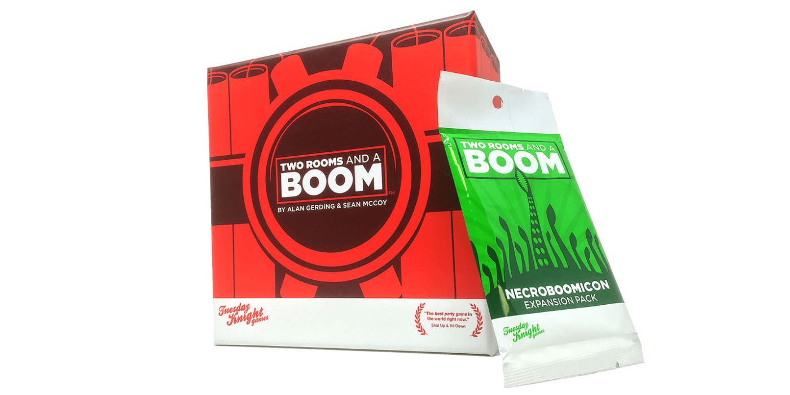

3 Deception Games like Coup that You Need to Try


Coup is an awesome bluffing game that has simple rules and usually ends in laughter. Every turn, you need the willpower to keep it together while lying to everyone at the table about your secret roles. "That's funny, I am...also the Duke..."
We've picked 3 great games that will give you a similar experience if you're looking for something new.
Sherrif of Nottingham


You may need an even better poker face for this one! Sheriff of Nottingham is another bluffing game that combines strategy with tons of laughter. Each round, one player acts as the sheriff while the others load up their bags with goods. Players may add any combination of legal goods or contraband, but must declare only legal goods to the sheriff! It goes something like this:
Sheriff: "Alright Sam, what's in the bag?"
Sam: "Uhhh. Five chickens."
Sheriff: "No way" *pops open bag, smiling*
Sheriff: *Finds five chickens* "NOOOOOO"
Legal goods like apples, bread, cheese, or chickens are worth low points, but they can be safely added to your bag. Contraband is worth many more points, but it will be confiscated if the sheriff chooses to open your bag and finds any!
If you love Coup but want a longer game with a more involved scoring system, Sheriff is a great option. This game takes more time to play, but nobody can be eliminated like they can in Coup. It's also harder to tell exactly who is in the lead in Sheriff, which adds to the mind games and strategy.
Buy Sherrif of Nottingham on Amazon
Werewords

If you want a game that is just as fun, quick, and simple as Coup, you should give Werewords a try. Werewords is also a deception game, and it's basically a combination of Mafia and 20 Questions. Instead of being a free for all like Coup though, Werewords requires some teamwork.
Each player is assigned a secret role - Villager, Seer, or Werewolf. A secret word is shared with the Werewolves and the Seer, but not the Villagers. All players then begin asking "yes" or "no" questions to try to figure out the word.
Not everyone has the same objective though... The Werewolves want to mislead everyone with their questions, while the Seer aims to help the Villagers. However, you can't be too obvious with your help or deception! If the word isn't guessed, the losing team can turn around and win by correctly identifying the Seer or Werewolf.
Werewords uses a nice (free) mobile app which "narrates" the game and chooses the secret word for the group. This makes the game flow quickly and means it fits into a tiny box just like Coup!
Buy Werewords on Amazon
Two Rooms and a Boom
If you've got a bigger group, you've got to try Two Rooms and a Boom. This is a ridiculously fun game of deception for how simple it is, thanks to the unique use of your home's floorplan. This game plays anywhere from 6 to 30 players!
To start, the group splits up into two adjacent rooms in your home, and everyone is assigned a secret team color - Red or Blue. One Red player will also be the "Bomber," and one Blue player will be the "President." At the end of the game, Red wins if the Bomber and President are in the same room, and Blue wins if they are separated.
The game is played over 3 timed rounds, and each room may talk openly together. Thus begins the insanity - you may choose to share your identity, keep it secret, lie to one person, or lie to everyone. You can even stay completely silent - it's up to you. But at the end of each round, each room votes to send a single person to the other room. Who will it be?
This game never disappoints and is one of the few games that caters to larger crowds. Just make sure to play at someone's home whose neighbors won't mind - people tend to yell...
Buy Two Rooms and a Boom on Amazon
Want more recommendations or have feedback for us? Send an email to support@spiralburst.com and we'll get back to you!